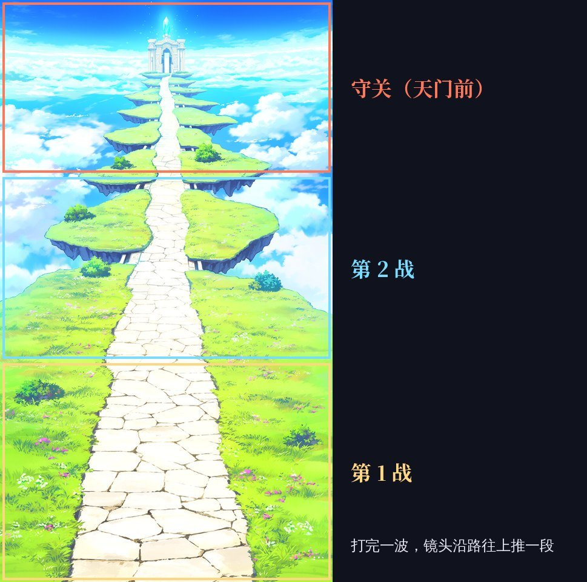
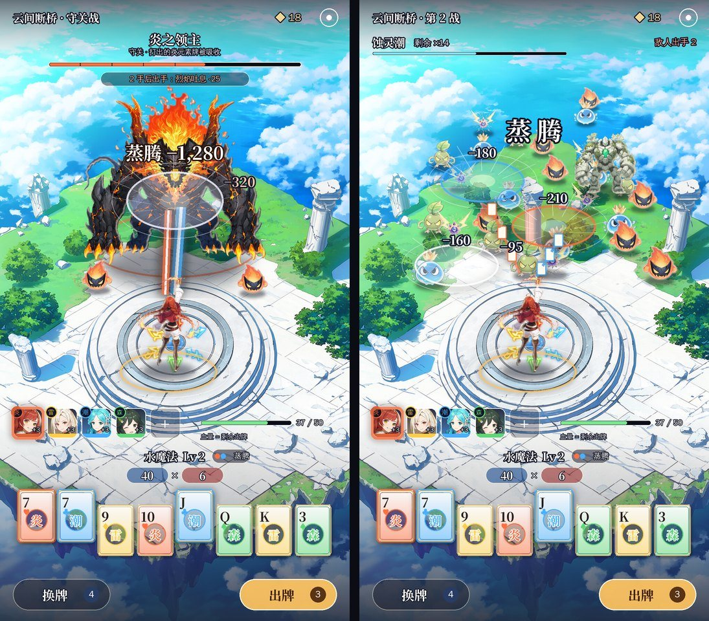
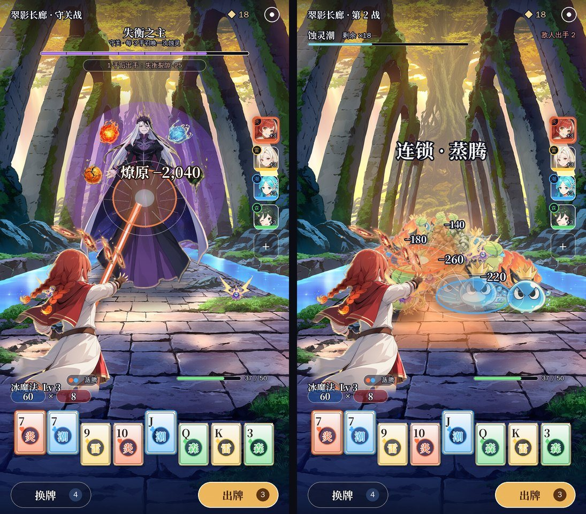
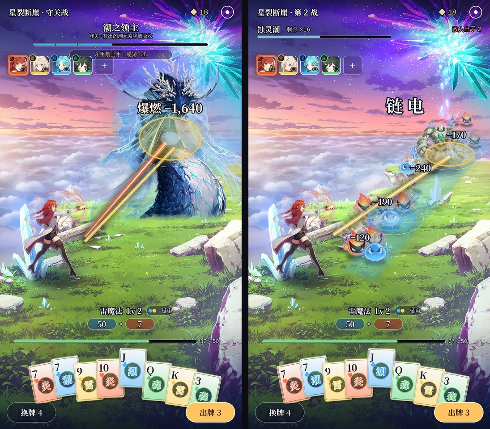

二代方案 v10：《源神：元素牌》战斗界面——A、B 按反馈改版
- 日期：2026-11-12
- 你对 v9 的反馈：
- 方案 A 看起来像开放世界，关卡的视觉结构没有表现出玩家在往前走；
- 方案 B 太压抑，两边不要都是墙，要开阔一点。
- 这一版：
- A2 云上天路：还是 3/4 俯视、主角在下方，但整个关卡变成一条从屏幕底部通到顶上「天门」的路。怪沿着路压下来，守关首领守在天门前。
- B2 天穹大道：还是越肩视角，但两边换成开阔的草原和云海，上半屏是大片蓝天，路的尽头是城堡。
- 两套都在顶部加了关卡进度：第 1 战 → 第 2 战 → 守关，三个节点连成一条路，走到哪亮到哪。
- 和上一版一样，每套两张效果图：左边单挑守关，右边群怪 AOE。还没做进游戏。
- 没提意见的方案 C（断崖斜阵）保持不变，见附录。
0. 结论先说
| 方案 | 怎么表现「往前走」 | 开阔吗 | 我的看法 |
|---|---|---|---|
| A2 云上天路（推荐） | 路从脚下一直通到屏幕顶上的天门；每打完一波，镜头沿路往上推一段；守关就在天门前 | 两边是云海里的小浮岛，四面都是天空 | 推荐。往前走的感觉最直接，群怪沿路压下来时一手打倒一片看得最清楚，守关和小怪是同一条路 |
| B2 天穹大道 | 路通向远处的城堡，越打离城堡越近 | 最开阔，上半屏全是天空和云 | 守关战最有气势；群怪挤在路中间那一段，一手打倒多少只不如 A2 清楚 |
1. A2 云上天路（3/4 俯视 + 一条往前的路）

- 场景：一条白石路从屏幕底部一直往上，穿过一串用石桥连起来的小浮岛，通到最顶上发着光的天门。两边是草地和小树，再往外是云海和蓝天。
- 往前走：
- 顶部进度条显示「第 1 战 → 第 2 战 → 守关」。
- 每打完一波，镜头沿路往上推一段，主角跟着往前走（见下图）。
- 守关首领站在天门前，打赢了才能过门进入下一段路。
- 单挑守关：首领挡在路中间，两只小怪护在两边；元素光束从主角射向首领，打中后炸开反应名和伤害数字。
- 群怪 AOE：蚀灵沿路和两边的浮岛压下来，越近越大；元素牌落地炸出彩色圆环，圆环里的怪一起掉血、一起倒。

效果图为了一眼看全，把整条路压在一屏里。游戏里有两种做法： - 推荐：把场景做成约三屏高的长图，每打完一波，镜头往上推一屏，主角走到新的路段。 - 省事的做法：整条路放在一屏里，主角每赢一战往前走一段。
2. B2 天穹大道（越肩 + 开阔）

- 场景：高原上一条笔直的石板大道，两边是草地，只散着几根断掉的白石柱，再往外是云海和远处的浮岛。上半屏是蓝天和大朵白云，路的尽头是一座发光的城堡。
- 往前走：每打完一波，城堡离得更近一点（背景放大一点）；守关时首领拦在城堡前面。
- 单挑守关：首领站在路中间、占半个屏幕；主角甩出一串火牌，飞牌直接打在首领身上。
- 群怪 AOE：蚀灵从城堡方向沿着路一波波涌过来；火焰沿路面一路烧过去。
- 界面：伙伴头像牌竖着排在右边，照原神的队伍栏；元素魔法名和「元素力 × 倍率」放在左下。
3. 两套共用的界面
- 整屏都是场景，没有横穿屏幕的血条和装备面板。
- 顶部：关卡名、关卡进度（三个节点）、源晶、设置，全部透明，压在天空上。
- 下方三成的高度从透明慢慢过渡到半透明：伙伴头像牌、血量（等于剩余出牌次数）、元素魔法名、「元素力 × 倍率」、8 张元素牌、换牌和出牌按钮。
4. 场景和怪物怎么结合（回答「没有很好的结合」）
| 做法 | 现在 | 方案里 |
|---|---|---|
| 站在地上 | 怪是一排排贴在背景前面的 | 每只怪的脚底落在场景的地面上，离得越远越小（A2 的俯视视角下远近差得少，B2 差得最多） |
| 影子 | 没有 | 每只怪脚下都有一块和场景光一个方向的影子 |
| 光线 | 怪自带的颜色和背景不一样 | 怪按场景的光调色（A2、B2 都是晴天，偏白偏亮），边上加一圈场景光颜色的轮廓光 |
| 远近 | 没有 | 远处的怪往天空色淡一点（空气透视），近处的清楚 |
| 从哪来 | 凭空出现 | 从路的前方压过来：A2 从天门那头沿路下来，B2 从城堡方向走过来 |
| 首领和场景 | 和小怪一样贴着 | 首领守在这段路的终点：A2 在天门前，B2 在城堡前 |
| 特效 | 白色飞牌 | 牌的元素色决定光束和圆环的颜色，落在地面上，带透视（圆环压成椭圆） |
这些在游戏里都能做：脚底影子、调色和淡出都是给怪物图片加一层颜色和透明度，NanoVG 本身就支持；地面透视就是按怪物脚底的高度算缩放。v8 实机已经有「按排缩放」，改成按场景的地面算就行。
5. 伙伴头像牌（替换一代的装备图标）

| 点开：全身立绘 + 技能 | 说明 |
|---|---|
 |
在战斗中点头像牌，整个界面压暗，弹出全身立绘、名字、元素、星级和技能。技能就是一代那件装备的效果（焰绯 = 一代「打出红桃每张倍率 +3」那件）。底下一排头像可以左右切换。 |
- 头像牌：A2 放在手牌上方，B2 竖排在右边。
- 出牌时触发了哪位伙伴，她的头像就亮一下，并弹出数值（就是一代装备触发时的跳字）。
- 一代 150 件装备里，常用的约 30 件做成伙伴，其余做成「器物」，用器物图标。
6. 用词（已改进游戏）
| 东西 | 叫法 |
|---|---|
| 牌 | 元素牌（♥ 炎、♦ 雷、♣ 潮、♠ 森） |
| 牌型 | 元素魔法，沿用一代的名字：火魔法（高牌）、水魔法（对子）、风魔法（两对）、土魔法（三条）、冰魔法（顺子）、雷魔法（同花）、光明魔法（葫芦）、黑暗魔法（四条）、时间魔法（同花顺）…… |
| 这一手的花色组合 | 反应名（纯表现，不改分数）：蒸腾、爆燃、燎原、链电、萌发、雷藤 |
| 装备 | 伙伴 |
7. 选定之后怎么做
- 按选定的方案重写战斗界面：去掉横穿的血条和装备面板，界面全部改成透明或半透明。
- 怪物站位改成按场景的地面来排，加影子、调色和轮廓光。
- 装备栏换成伙伴头像牌，加点开看立绘的弹窗。
- 八段路每段出一张场景图：选 A2 就是约三屏高的长图，从起点一直画到守关的门；选 B2 就是一张大道图，加一张首领战图。
- 做好后录实机截图和录屏给你看。
8. 要你定
- 选 A2 云上天路（推荐）还是 B2 天穹大道？也可以混搭：A2 打小怪，守关时镜头拉近成 B2 的越肩视角。
- A2 的「往前走」用哪种：长图镜头往上推（推荐），还是一屏整条路、主角往前走？
- 名字：还用《源神：元素牌》吗？上一版提过，这个名字有被当成仿冒《原神》的风险。
- 伙伴全是女性角色，还是男女都有？
9. 附：v9 的三套（A、B 已按反馈改成上面的 A2、B2）
| v9 A 浮岛祭坛（像开放世界，看不出往前走） | v9 B 林间长路（两边是墙，太压抑） | v9 C 断崖斜阵（保留） |
|---|---|---|
 |
 |
 |
10. 之前的方案
| 版本 | 内容 | 结果 |
|---|---|---|
| v9 | 战斗界面三套：A 浮岛祭坛 / B 林间长路 / C 断崖斜阵（docs/v2/立项方案_v9.md） |
A 像开放世界、B 太压抑 → v10 |
| v8 | 《源神：元素牌》题材包装 + 实机换皮（docs/v2/立项方案_v8.md） |
题材定了；战斗界面太乱 → v9 |
| v7 | 扑克地牢（战斗照《吸血鬼爬行者》，实机） | 战斗框架保留 |
| v6 | 调色师（实机切片） | 没有正常战斗的体验 |
| v5 | 乐队 / 调色 / 烟花（概念图） | 选了调色 → v6 |
| v4 | 新怪谈 / 深海 / 地府 | 和玩法不搭、画风低 |
| v3 | 仙门降妖（第一次照《宗师之上》做布局） | 题材不新、页游感 |
| v2 / v1 | 武侠 / 末日 | — |